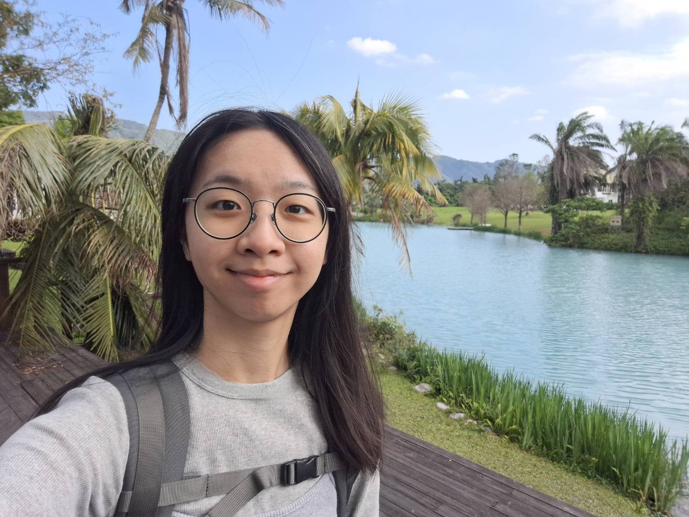
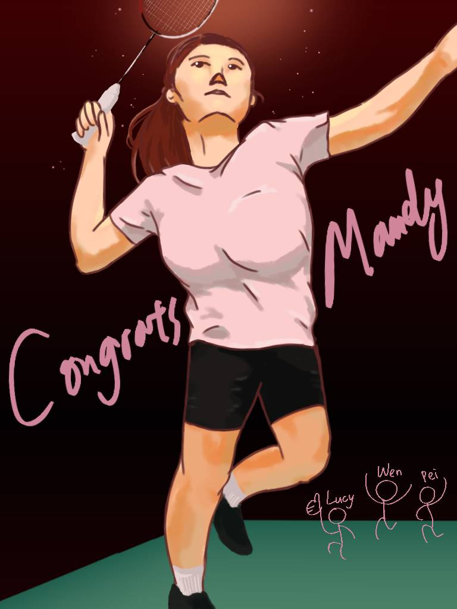
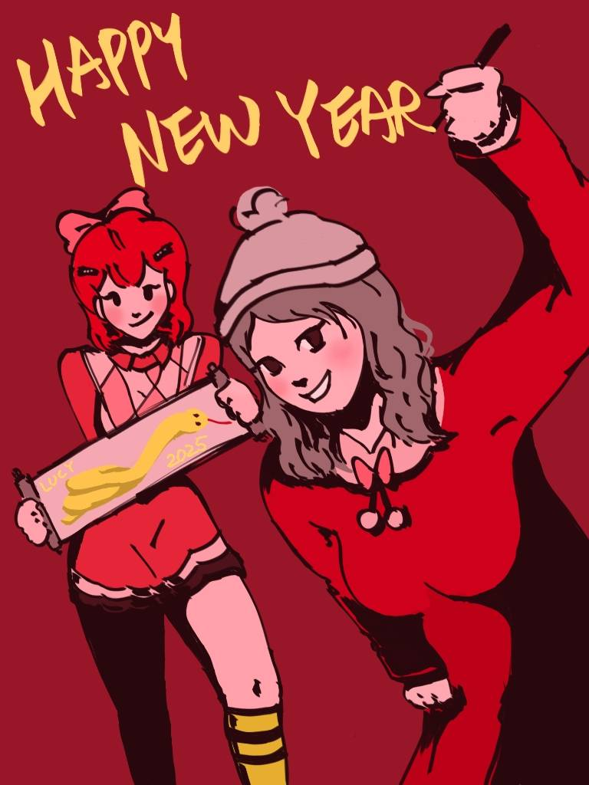
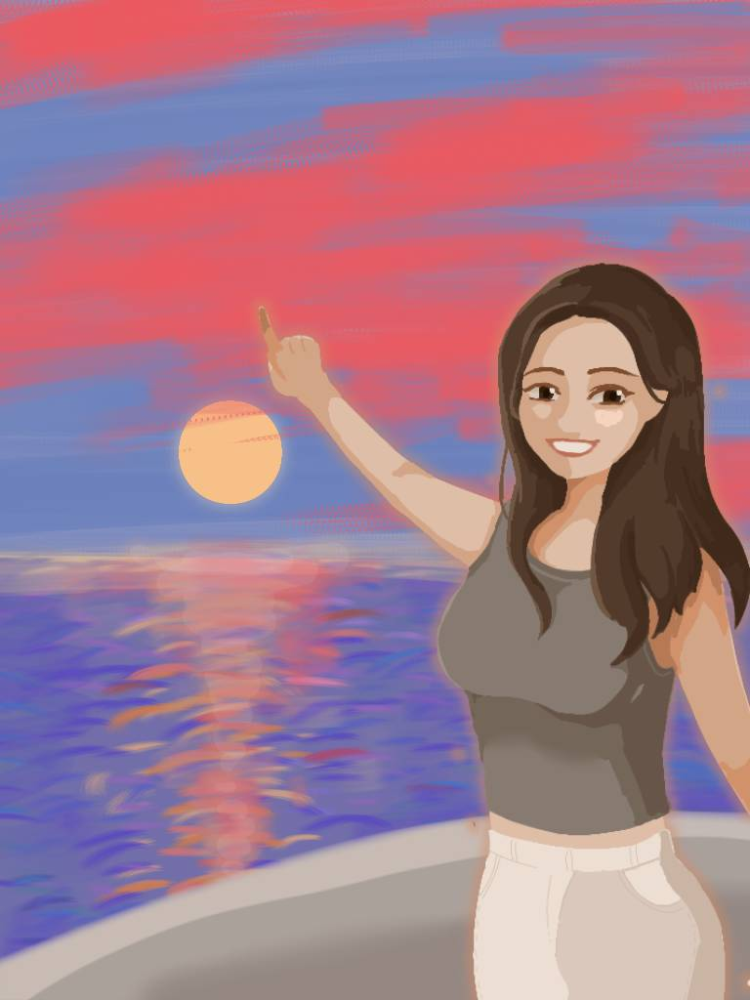
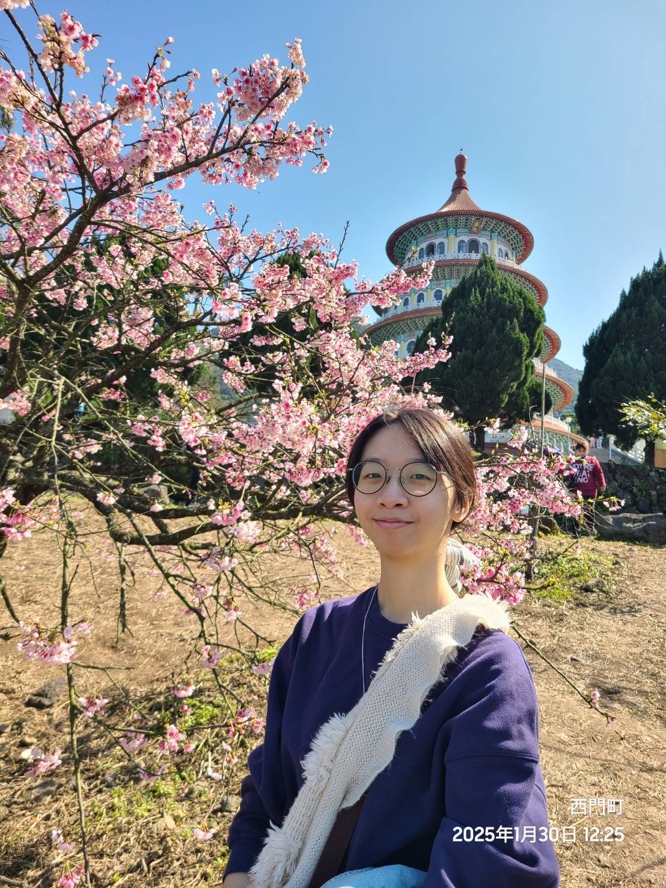
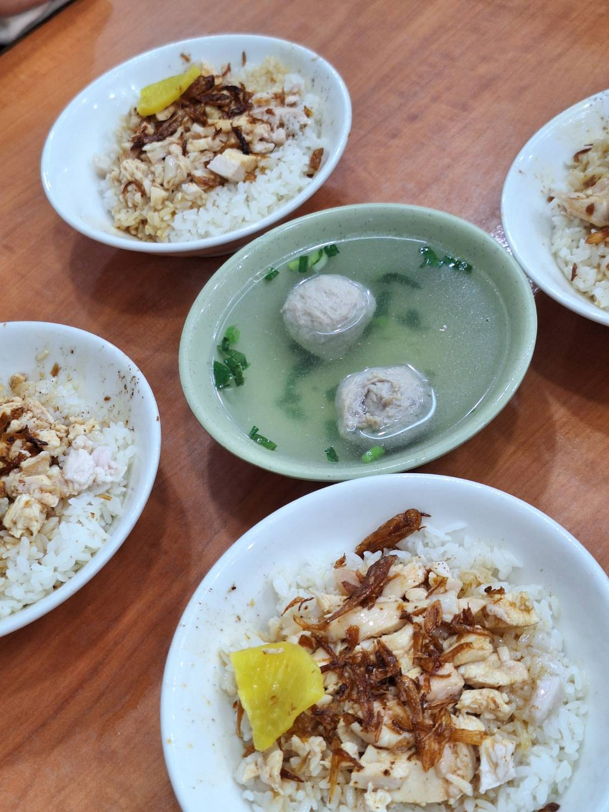
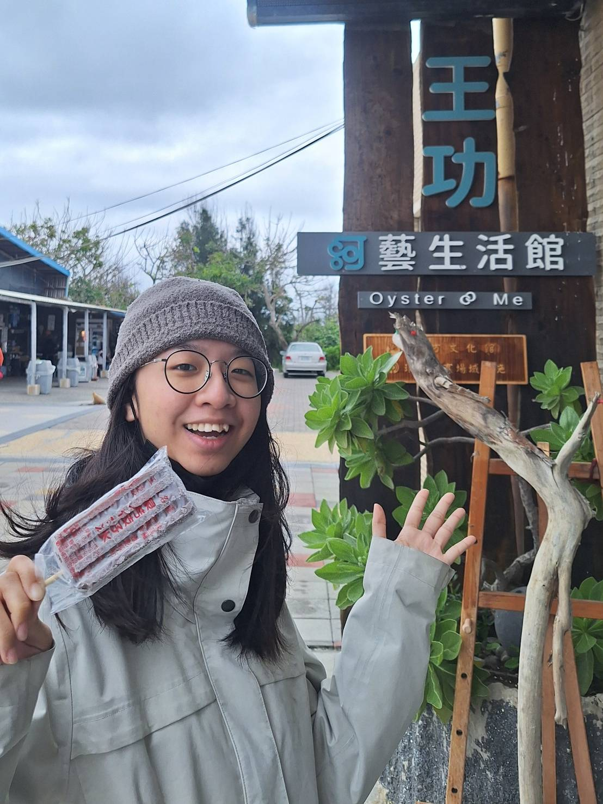

歡迎來到我的網站！以下是我的自我介紹

林志玲 Lucy Lin
個性：樂觀開朗、積極主動
興趣：畫畫、旅遊
我的畫畫作品
近期的作品都是畫給朋友的禮物~

是一位喜歡打羽毛球的朋友，嘗試畫下她打球的畫面。試著在陰影部份加上了地板的綠色反光，很有趣。

2025新年賀圖! 左邊的角色是動物森友會裡的傅珂，右邊則是一位朋友在動物森友會的形象。因為是新年，嘗試使用不同紅色來畫。不小心畫成左手寫字了！

這是一位喜歡旅遊的朋友，她說畢業時她希望可以每個月出國旅行，現在雖然沒有每個月出國一次，不過每年至少有出國一次，算是完成了部分心願吧！希望她可以像畫中一樣在航行中看夕陽。
旅遊照片分享

今年01/30去淡水天元宮看櫻花。每年大約1-2月時會有櫻花盛開，可以在過年放假時前往觀賞，是個在臺灣看櫻花的好選擇。

和朋友去嘉義玩，每天都在吃雞肉飯！圖片中是民主雞肉飯，真的好好吃，是我們到嘉義時吃的第一家，也是離開前吃的最後一家。

今年清明節回去彰化掃墓時，在王功吃了古早味的冰棒，還看了燈塔。